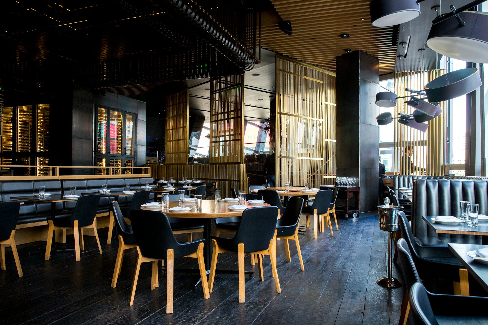

Семейный обед
Собраться всем вместе и заказать любимые блюда к общему столу.
ДУШАНБЕ · ТАДЖИКСКАЯ КУХНЯ
Щедрый дастархан, знакомые ароматы
и время для самых близких.
Для долгих разговоров.
Для особенных встреч. Для вас.

01 — НАША ИСТОРИЯ
В основе этой концепции — простая идея: самые важные моменты случаются за общим столом. Традиционные блюда, неторопливый чай и внимание к каждому гостю.
Здесь можно представить историю вашего ресторана: рассказать о семье, кухне и людях, которые каждый день создают его характер.
03 — АТМОСФЕРА
Тёплый свет. Любимые люди.
Вечера, которые не хочется торопить.
ДЛЯ ВАШИХ МОМЕНТОВ
Собраться всем вместе и заказать любимые блюда к общему столу.
Отложить дела, выбрать уютный столик и просто побыть рядом.
Отметить важное событие в атмосфере тепла и внимания.
04 — ЖДЁМ В ГОСТИ
Выберите день и время для следующей встречи.
Душанбе, Таджикистан
Здесь будет точный адрес вашего ресторанаЕжедневно · 11:00–23:00
Пример расписанияВаш телефон и WhatsApp
Контакты подключаются при адаптации сайта